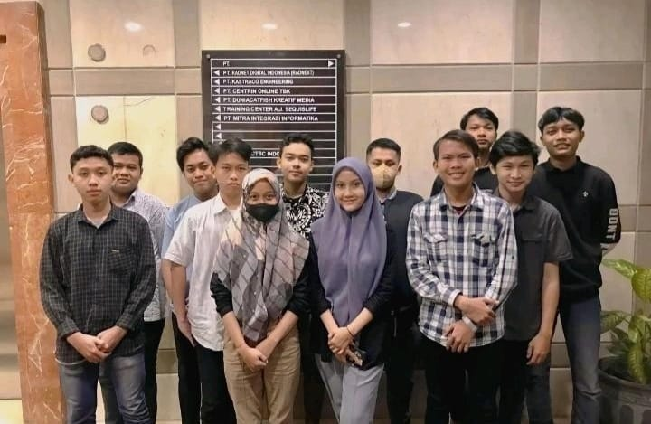

IT Operation Internship

sebagai IT Operation saya melakukan pengelolaan operasional harian dan infrastruktur jaringan komputer. Fokus utama saya adalah memastikan stabilitas layanan teknologi melalui troubleshooting jaringan dan internet yang responsif bagi klien. Selain aspek teknis lapangan, saya memiliki ketelitian dalam manajemen administratif, khususnya dalam pencatatan dan pengelolaan data penagihan bulanan klien secara sistematis. Saya juga berkontribusi dalam tahap perancangan arsitektur jaringan dasar yang disesuaikan dengan kebutuhan spesifik pengguna. Sebagai bentuk kontribusi terhadap pengetahuan teknis, saya aktif menyusun dokumentasi mendalam dan studi kasus jaringan melalui platform Blogspot. Dengan kemampuan kolaborasi tim yang kuat, saya berkomitmen untuk menjaga kualitas layanan IT tetap optimal serta memastikan setiap solusi teknis terdokumentasi dengan baik untuk pengembangan berkelanjutan.
Menangani operasional IT harian dan memberikan solusi cepat terhadap kendala jaringan serta konektivitas internet klien.
Bekerja sama dengan tim teknis dalam menjaga performa layanan dan kepuasan klien melalui pemeliharaan sistem yang rutin
Membantu perancangan skema dasar arsitektur jaringan komputer yang efisien sesuai dengan permintaan dan kebutuhan klien.